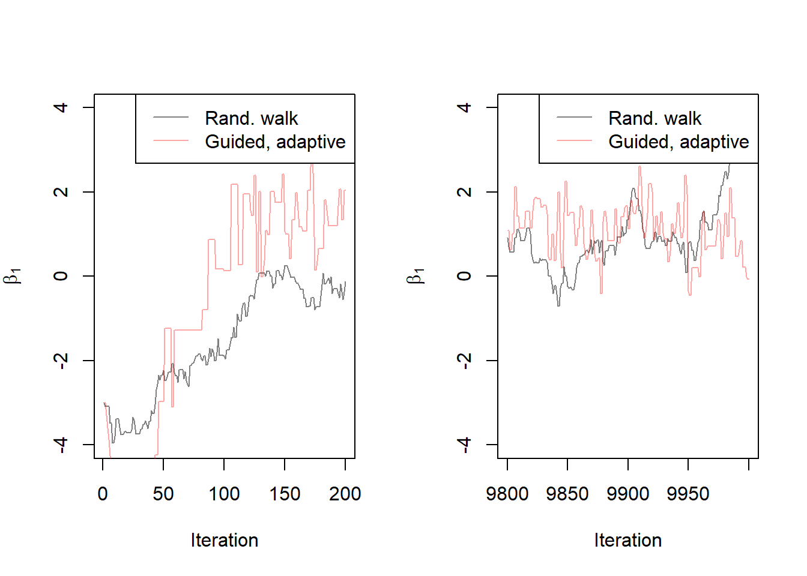
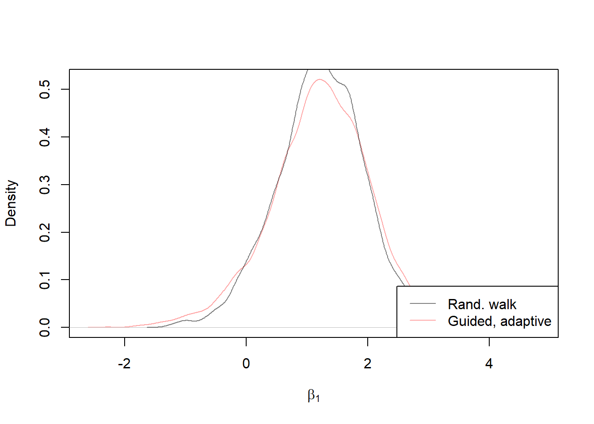
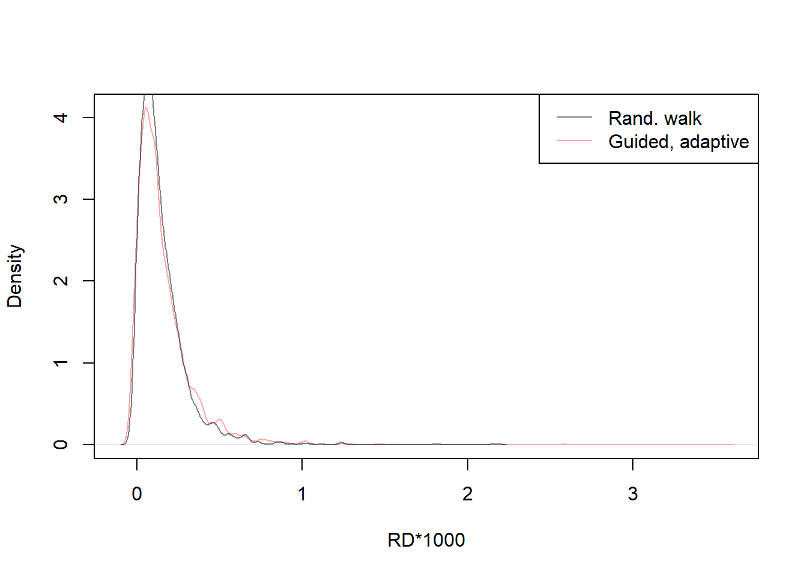

Chapter 5 Algoritmo de metrópolis guiado y adaptativo
5.1 Concepto y funcionamiento de algoritmo
El algoritmo Metrópolis Guiado y Adaptativo es una variante del algoritmo Metrópolis-Hastings que busca mejorar la eficiencia y convergencia del muestreo de Monte Carlo Markov Chain (MCMC). A continuación, se proporciona una explicación detallada de los conceptos y pasos relacionados con este algoritmo.
Definición del problema: El algoritmo Metrópolis Guiado y Adaptativo se utiliza para aproximar la distribución de probabilidad de una variable aleatoria de interés, dada una función objetivo o distribución objetivo. Esta distribución objetivo puede ser la distribución posterior en un problema de inferencia bayesiana.
Generación de una cadena de Markov: Al igual que en el algoritmo Metrópolis-Hastings, el algoritmo Metrópolis Guiado y Adaptativo genera una cadena de Markov, que es una secuencia de estados que evoluciona de acuerdo con ciertas reglas de transición. Cada estado de la cadena representa una posible configuración de la variable aleatoria de interés.
Propuesta de un nuevo estado: En cada paso de la cadena, se propone un nuevo estado basado en el estado actual. Sin embargo, a diferencia del algoritmo Metrópolis-Hastings estándar, en el algoritmo Metrópolis Guiado y Adaptativo se utiliza una guía o dirección para generar el nuevo estado propuesto. Esta guía puede ser determinada por información adicional o conocimiento previo sobre la distribución objetivo.
Evaluación de la aceptación: Una vez que se propone un nuevo estado, se evalúa si se acepta o se rechaza. Esto se hace calculando la razón de aceptación, que es la proporción entre la densidad de probabilidad de la distribución objetivo evaluada en el nuevo estado propuesto y la densidad de probabilidad evaluada en el estado actual. Si la razón de aceptación es mayor o igual a uno, se acepta el nuevo estado. Si es menor que uno, se acepta el nuevo estado con una probabilidad igual a la razón de aceptación.
Actualización del estado: Si se acepta el nuevo estado, se actualiza el estado actual de la cadena con el nuevo estado propuesto. Si se rechaza el nuevo estado, se mantiene el estado actual sin cambios.
Adaptación de la Propuesta: Una característica clave del algoritmo Metrópolis Guiado y Adaptativo es la adaptación de la propuesta de salto. La desviación estándar de la distribución de salto se ajusta automáticamente durante el proceso de muestreo para mejorar la eficiencia del algoritmo.
5.2 Implentación en R
# initialize
M=10000 # Se generan 10000 muestras en total
burnin=1000 # se defne la cantidad de iteracion inicial
set.seed(91828) # se establece la semilla
beta_post_adaptguide = matrix(nrow=M+burnin, ncol=2) #Matriz para almacenar coeficientes del modelo
colnames(beta_post_adaptguide) = c('beta0', 'beta1') # designar nombres a las columnas
accept = numeric(M+burnin) # vector numerico de las M muestras + las iteraciones
rd_adaptguide = numeric(M+burnin) # vector numerico de las M muestras + las iteraciones
beta_post_adaptguide[1,] = c(2,-3) # se establece la primera fila con valores iniciales (2, -3)
rd_adaptguide[1] = riskdifference(y,x,beta_post[1,]) # dif. de riesgo de las estimaciones
accept[1] = 1 # Vector para registrar si la muestra es aceptada (1) o rechazada (0)
prop.sigma = c(0.2, 0.2) # Vector con desviaciones estandar iniciales
dir = 1 # Esta variable se utiliza para controlar la dirección de exploración
for(i in 2:(M+burnin)){
if((i < burnin) & (i > 25)){
prop.sigma = apply(beta_post_adaptguide[max(1, i-100):(i-1),], 2, sd)
} # si 25 > i < 1000 se calcula SD de muestras anteriores para guiar la propuesta.
oldb = beta_post_adaptguide[i-1,] # almacena los coeficientes de la muestra anterior
prop = dir*abs(rnorm(2, sd=prop.sigma)) # propuesta nuevo coeficiente * dir
newb = oldb+prop # Calcula los nuevos coeficientes al sumar la propuesta
num = loglik(y,x,newb) # Calculan el logaritmo de verosimilitud para newb
den = loglik(y,x,oldb) # Calculan el logaritmo de verosimilitud para oldb
acceptprob = exp(num-den) # calcula la probabilidad de aceptar la newb
acc = (acceptprob > runif(1)) # aceptar o rechazar la nueva función anterior
if(acc){
beta_post_adaptguide[i,] = newb
accept[i] = 1 # se almacenan si es aceptada
}else{
beta_post_adaptguide[i,] = oldb
accept[i] = 0
dir = dir*-1 # se invierte la dirección dir multiplicándola por -1.
# cambia la dirección de exploración en el espacio de parámetros.
}
# Calcula y almacena la diferencia de riesgo para cada conjunto de estimaciones
rd_adaptguide[i] = 1000*riskdifference(y,x,beta_post_adaptguide[i,])
}
# luego del período de "burn-in" se calcula el valor
# del posterior promedio de los coeficientes
postmean = apply(beta_post_adaptguide[-c(1:1000),], 2, mean)
cat("Posterior mean, guided and adaptive\n", round(postmean, 2))Posterior mean, guided and adaptive
-1.78 1.225.3 Resultados e interpretación
Estos gráficos proporcionan una visualización de cómo se están comportando las cadenas de Markov generadas por dos métodos diferentes. Puedes observar cómo evolucionan las trazas a lo largo de las iteraciones y si convergen hacia valores estables. La comparación entre los dos métodos ayuda a evaluar la eficacia del enfoque guiado y adaptativo en comparación con la caminata aleatoria:
col1 = rgb(0,0,0,.5)
col2 = rgb(1,0,0,.35)
par(mfcol=c(1,2))
#trace plots
plot(beta_post[1:200,2], type='l', ylab=expression(beta[1]), xlab="Iteration", ylim=c(-4, 4), col=col1)
lines(beta_post_adaptguide[1:200,2], col=col2)
legend("topright", lty=1, col=c(col1, col2), legend=c("Rand. walk", "Guided, adaptive"))
plot(9800:10000, beta_post[9800:10000,2], type='l', ylab=expression(beta[1]), xlab="Iteration", ylim=c(-4, 4), col=col1)
lines(9800:10000, beta_post_adaptguide[9800:10000,2], col=col2)
legend("topright", lty=1, col=c(col1, col2), legend=c("Rand. walk", "Guided, adaptive"))
Estos gráficos de densidad permiten comparar las distribuciones de dos conjuntos de datos, uno generado mediante el método de caminata aleatoria estándar y otro mediante el método guiado y adaptativo:
# density plots
plot(density(beta_post_adaptguide[-c(1:1000),2]), col=col2, xlab=expression(beta[1]), ylab="Density", main="")
lines(density(beta_post[-c(1:1000),2]), col=col1)
legend("bottomright", lty=1, col=c(col1, col2), legend=c("Rand. walk", "Guided, adaptive"))
plot(density(rd_adaptguide[-c(1:1000)]), xlab="RD*1000", ylab="Density", main="", col=col2)
lines(density(rd[-c(1:1000)]), col=col1)
legend("topright", lty=1, col=c(col1, col2), legend=c("Rand. walk", "Guided, adaptive"))